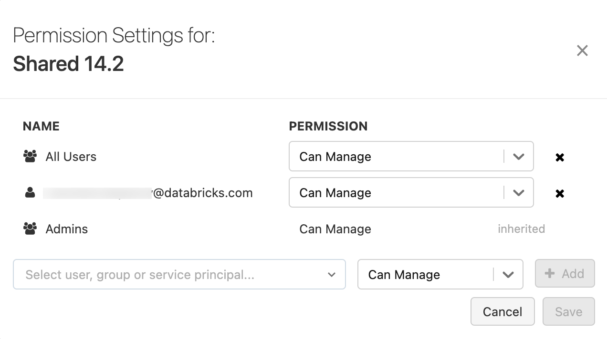

Cluster access control
This article describes how to configure permissions on clusters.
Note
Access control is available only in the Premium plan or above.
Cluster access control overview
You can configure two types of cluster permissions:
The
Allow unrestricted cluster creationworkspace entitlement controls your ability to create clusters.Workspace admins grant users the
Allow unrestricted cluster creationCluster permissions control your ability to use and modify a specific cluster.
Users with the Can Manage permission on a cluster can configure cluster permissions. Workspace admins have the Can Manage permission on all clusters in their workspace.
Configure cluster creation entitlement
Workspace admins can assign the Allow unrestricted cluster creation entitlement to users, service principals, and groups. To assign entitlements, see Assigning entitlements.
As a workspace admin, log in to the Databricks workspace.
Click your username in the top bar of the Databricks workspace and select Admin Settings.
Click the Identity and access tab.
Next to Users, , Service Principals, or Groups click Manage.
Go to the Users, Service Principals, or Groups tab.
Select the user, service principal, or group you want to update.
Click the Entitlement tab.
Toggle on the Allow unrestricted cluster creation setting.
Databricks recommends revoking the Allow unrestricted cluster creation entitlement from the users group and using compute policies to limit users’ compute creation permissions based on a set of policy rules. For more information, see Create and manage compute policies.
Cluster permissions
There are four permission levels for a cluster: No Permissions, Can Attach To, Can Restart, and Can Manage. The table lists the abilities for each permission.
Important
Users with Can Attach To permissions can view the service account keys in the log4j file. Use caution when granting this permission level.
Ability |
No Permissions |
Can Attach To |
Can Restart |
Can Manage |
|---|---|---|---|---|
Attach notebook to cluster |
x |
x |
x |
|
View Spark UI |
x |
x |
x |
|
View cluster metrics |
x |
x |
x |
|
View driver logs |
||||
Terminate cluster |
x |
x |
||
Start and restart cluster |
x |
x |
||
Edit cluster |
x |
|||
Attach library to cluster |
x |
|||
Resize cluster |
x |
|||
Modify permissions |
x |
Workspace admins have the Can Manage permission on all clusters in their workspace. Users automatically have the Can Manage permission on clusters they create.
Note
Secrets are not redacted from a cluster’s Spark driver log stdout and stderr streams. To protect sensitive data, by default, Spark driver logs are viewable only by users with Can Manage permission on job, single user access mode, and shared access mode clusters. To allow users with Can Attach To or Can Restart permission to view the logs on these clusters, set the following Spark configuration property in the cluster configuration: spark.databricks.acl.needAdminPermissionToViewLogs false.
On No Isolation Shared access mode clusters, the Spark driver logs can be viewed by users with Can Attach To or Can Manage permission. To limit who can read the logs to only users with the Can Manage permission, set spark.databricks.acl.needAdminPermissionToViewLogs to true.
See Spark configuration to learn how to add Spark properties to a cluster configuration.
Configure cluster permissions
This section describes how to manage permissions using the workspace UI. You can also use the Permissions API or Databricks Terraform provider.
You must have the Can Manage permission on a cluster to configure cluster permissions.
In the sidebar, click Compute.
On the row for the cluster, click the kebab menu
 on the right, and select Edit permissions.
on the right, and select Edit permissions.In Permission Settings, click the Select user, group or service principal… drop-down menu and select a user, group, or service principal.
Select a permission from the permission drop-down menu.
Click Add and click Save.
Configure cluster permissions with Terraform
You can manage permissions in a fully automated setup using Databricks Terraform provider and databricks_permissions:
resource "databricks_group" "auto" {
display_name = "Automation"
}
resource "databricks_group" "eng" {
display_name = "Engineering"
}
resource "databricks_group" "ds" {
display_name = "Data Science"
}
data "databricks_spark_version" "latest" {}
data "databricks_node_type" "smallest" {
local_disk = true
}
resource "databricks_cluster" "shared_autoscaling" {
cluster_name = "Shared Autoscaling"
spark_version = data.databricks_spark_version.latest.id
node_type_id = data.databricks_node_type.smallest.id
autotermination_minutes = 60
autoscale {
min_workers = 1
max_workers = 10
}
}
resource "databricks_permissions" "cluster_usage" {
cluster_id = databricks_cluster.shared_autoscaling.cluster_id
access_control {
group_name = databricks_group.auto.display_name
permission_level = "CAN_ATTACH_TO"
}
access_control {
group_name = databricks_group.eng.display_name
permission_level = "CAN_RESTART"
}
access_control {
group_name = databricks_group.ds.display_name
permission_level = "CAN_MANAGE"
}
}